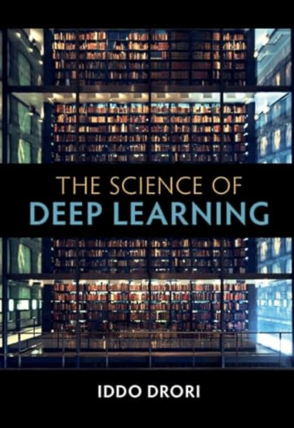
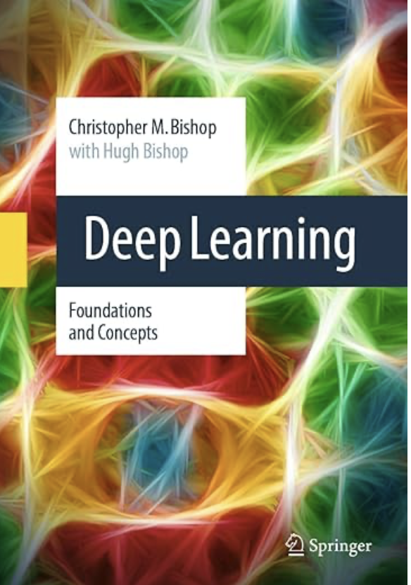
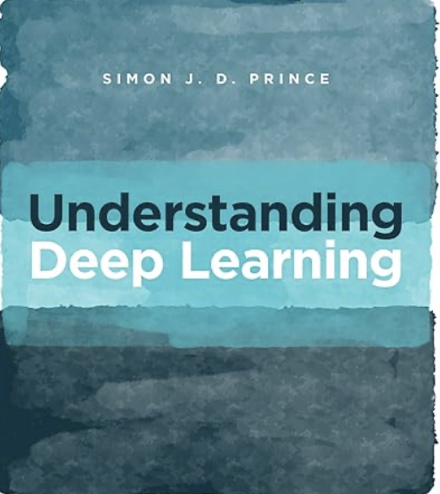
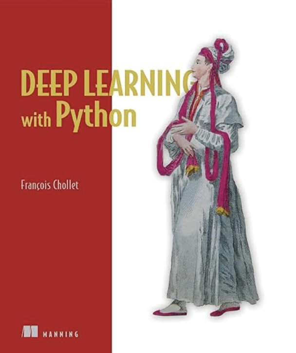
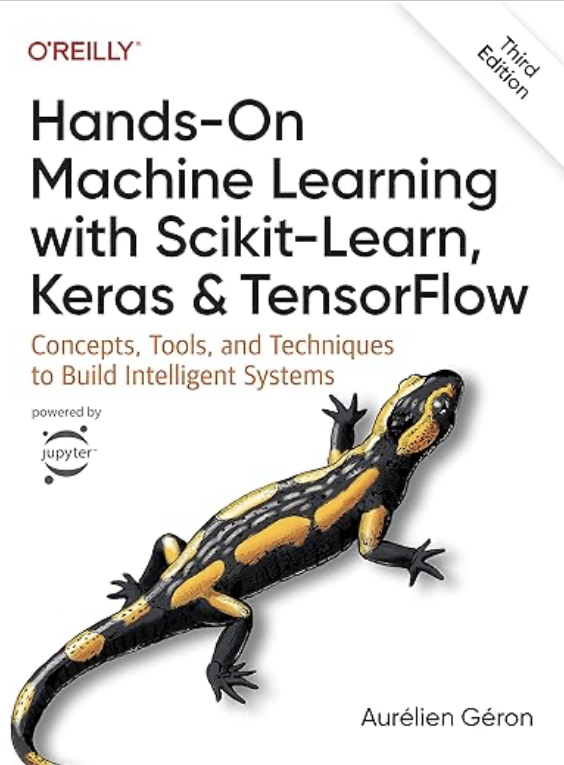

This is a nice, concise book introducing the theory behind deep learning. You can find more information about the book here.

This is a more extensive book in the theory behind deep learning. You can find more information about the book here.

Another nice book in the theory behind deep learning. It covers a lot of topics in the modern deep learning architecture. You can find more information about the book here.

This book is written from a practical standpoint and provides a lot of coding examples for the main deep learning architectures. You can find more information about the book here.

Here's another interesting book from a practical standpoint. It also covers classical machine learning tools. You can find more information about the book here.
A very interesting book on the many-world interpretation of quantum physics. It includes a nice discussion about quantum uncertainty as well. You can find more information about the book here.
This book covers the entire path of physics development and then introduces the string theory. You can find more information about the book here.
In this book, Penrose criticizes string theory for straying from real physics and suggests quantum mechanics may not fully apply to larger objects, proposing potential modifications. A nice read. You can find more information about the book here.